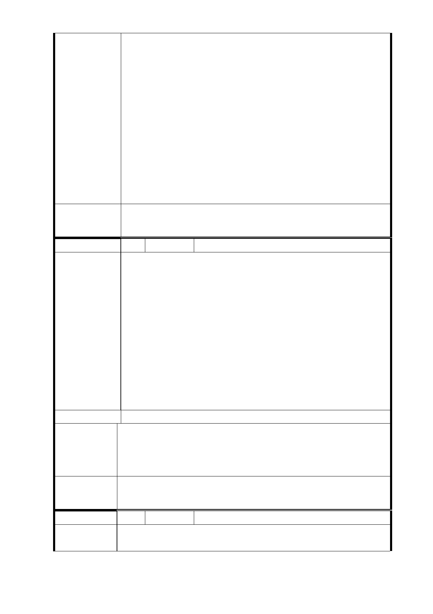

之全部時，應對建築物所有權人以下列方案安置：一、對
合於國民住宅條例之承租規定者，依國民住宅出售出租及
商業服務設施暨其他建築物標售標租辦法規定優先辦理
承租國宅。主管機關無法於拆除建築物前，完成配租作
業，供其遷入而須等候者，按月發給安置房租津貼 新臺
幣（以下同）二萬元，不足一個月以一個月計算。最高安
置房租津貼總額不得逾九十萬元。二、放棄前款承租國民
住宅者，發給安置費用九十萬元。三、主管機關無國民住
宅可供配租或建築物所有權人為非自然人，由主管機關發
給安置費用九十萬元。但拆遷戶為公法人者，不予發給。
四、對不合於國民住宅承租資格者，發給安置費用九十萬
元。」，故土地開發無「租金補助」。
2.店面意見同編號 2 研析意見。
委 員 會 決 議 同「市府回應意見」。
編 號 22 陳情人 王瑞梅（R04 捷二）
我所擁有的房屋，剛好在捷運信義線東延段土地開發計劃案
中，期待又怕受傷害中，希望能與都發局協商，達成我們對
住的的願望，維持原來房屋坐北朝南屋向及樓層，和不縮小
坪數。
此房屋是我的父母自原國泰建設購得，也是父母親的第一份
陳
情理
由
房產，我的童年是在此渡過的，父親過世後遺留給我，是我
們家族共同的回憶，多年來父母親常提到當初買房的條件是
要“坐北朝南＂的屋向，有他對家庭的期許，就是對大自然
的認識和尊重，順應天道及孝的意義。哥哥成家後和孩子也
在這長大，這是我們家族共同的根源，我很珍惜都發局讓我
們的房屋有更新的機會，藉此簡單的陳情，希望能納入計劃
案的考量中，謝謝！
建議辦法
開發建物之規劃及設計未來係由投資人依變更都市計畫說明
市 府 回 應 書內土地使用分區管制規定、臺北市土地使用分區管制規
意 見 則、建築法、建築技術規則等相關法令檢討及辦理。另陳情
人之意見及需求將反映予未來之投資人納入考量及參考。
委 員 會 決 議 同「市府回應意見」。
編 號 23 陳情人 鍾蘭（地下穿越）
陳情理由
本區經政府公告為都更更新單元，其基地面積約 9500 平方公
尺，但容積獎勵只有前面的一些（1300 平方公尺）而已，其
- 104 -